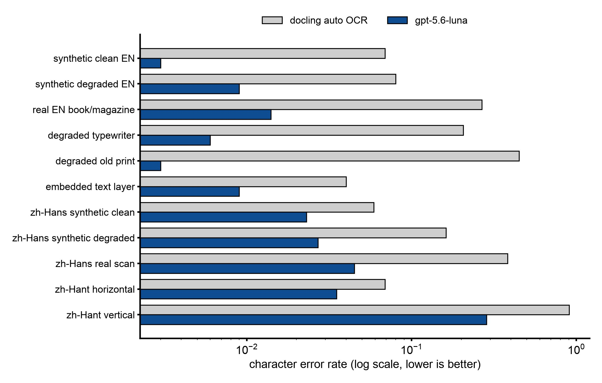

Why a vision model reads a scanned page better than a local OCR engine¶
Abstract¶
When a PDF page has no text layer, the --to-epub route asks docling's local OCR engine to read it. On this Mac, docling's automatic choice was rapidocr on onnxruntime. The study paired that engine against a vision model (gpt-5.6-luna) reading the page image, on 25 scanned pages with typed or exact ground truth. The vision model had the lower character error rate (CER) on all 25 pages. On real scans the local engine left 16 to 54% CER; the vision model stayed near 1%. The vision model is only safe at full resolution: at low resolution it invented whole pages of fluent text. The study also found that docling's default PDF backend renders some scan encodings wrong, so OCR returns nothing while the run reports success.
The tool still reads scans with docling's local OCR (--pdf-ocr). A vision model reading the page text is not a flag yet.
Setup¶
- Local arm: docling 2.129.0 with OCR set to auto, which resolved to rapidocr 3.9.2 with onnxruntime in 27 of 27 cells. rapidocr's default language is
ch(its Chinese and Latin recognizer). Apple silicon, 16 GB, MPS for the layout and table models. - Vision arm: gpt-5.6-luna reading the page rendered at scale 2 with image detail high, reasoning effort low. The prompt asked for a plain transcription in reading order, with
[illegible]for unreadable words. - Pages: two-page cuts of real scans (typewriter, book and magazine, old print, scans that already carry an OCR layer, simplified and traditional Chinese) plus synthetic scans made from born-digital pages (clean, and degraded with rotation, blur and JPEG q40).
- Ground truth: typed from the image for most real scans; exact (the source text layer) for the synthetic scans. For three pages (hekate, innerspace, hermeticum) it was drafted from the embedded layer and then corrected, which favors the layer.
- Scores: CER is order-sensitive;
line_errignores order; tau is Kendall's tau over matched lines, so it measures reading order.
Results¶
Per-class results, copied from the record (auto default vs Luna at scale 2 / high):
| class | n pages | auto CER | Luna CER | auto WER/HanCER | Luna WER/HanCER | auto line_err | Luna line_err | auto tau | Luna tau | Luna s/page | Luna tokens p/c (mean) |
|---|---|---|---|---|---|---|---|---|---|---|---|
| synthetic clean EN (arxiv, eula) | 4 | 0.069 | 0.003 | 0.092 | 0.014 | 0.042 | 0.002 | 0.9 | 0.99 | 17.0 | 2566/657 |
| synthetic degraded EN | 4 | 0.08 | 0.009 | 0.095 | 0.021 | 0.021 | 0.002 | 0.93 | 0.99 | 21.8 | 2566/671 |
| real EN book/magazine scan (chaldean spread, forward) | 2 | 0.267 | 0.014 | 0.373 | 0.049 | 0.116 | 0.001 | 0.92 | 0.97 | 18.6 | 2618/1056 |
| degraded typewriter (CIA) | 3 | 0.206 | 0.006 | 0.237 | 0.006 | 0.12 | 0.0 | 0.9 | 0.89 | 16.3 | 2528/699 |
| degraded old print (deg1 colour pamphlet, deg2 bitonal novel) | 2 | 0.449 | 0.003 | 0.55 | 0.022 | 0.032 | 0.002 | 0.85 | 0.98 | 26.1 | 2006/1470 |
| scan with embedded OCR layer (hekate, innerspace, hermeticum*) | 3 | 0.04 | 0.009 | 0.08 | 0.044 | 0.025 | 0.003 | 0.99 | 1.0 | 16.4 | 1265/924 |
| simplified Chinese, synthetic clean | 2 | 0.059 | 0.023 | 0.027 | 0.005 | 0.045 | 0.006 | 0.93 | 0.83 | 27.5 | 2604/1502 |
| simplified Chinese, synthetic degraded | 2 | 0.162 | 0.027 | 0.105 | 0.007 | 0.068 | 0.01 | 0.89 | 0.83 | 30.2 | 2604/1376 |
| simplified Chinese, real scan (docling default backend) | 1 | 0.383 | 0.045 | 0.249 | 0.001 | 0.237 | 0.039 | 0.98 | 1.0 | 39.7 | 3042/1540 |
| simplified Chinese, real scan (pypdfium2 backend, full_page) | 1 | 0.145 | 0.045 | 0.045 | 0.001 | 0.052 | 0.039 | 0.98 | 1.0 | 39.7 | 3042/1540 |
| traditional Chinese, horizontal (hant2) | 1 | 0.069 | 0.035 | 0.06 | 0.042 | 0.05 | 0.031 | 1.0 | 1.0 | 29.0 | 1916/1855 |
| traditional Chinese, vertical (hant1) | 1 | 0.905 | 0.285 | 0.917 | 0.266 | 0.093 | 0.132 | -0.03 | 0.93 | 43.8 | 3161/1451 |
* hermeticum is the holdout. Denominators are pages.

Mean CER per class from the table above, log scale. Lower is better. Each class has one to four pages.
- Every page: Luna had the lower CER on 25 of 25 paired pages.
- Greek: the local engine read 0 of 17 Greek lines; Luna read 17 of 17.
- Where the local engine loses: garbled line starts and whole lines on typewriter and old print; paragraph order scrambled on skewed pages; no Greek.
- Where Luna loses: it writes display equations the ground truth left out; it modernizes Chinese variant forms (爲 to 為); on the hardest Chinese page it substitutes plausible characters.
- Cost of the vision arm: median 2,528 prompt and 914 completion tokens per page, median 21 s per page (range 10 to 44 s).
Low resolution invents text. Two cells ran at scale 1 with detail low:
| page | scale/detail | prompt tok | completion (reasoning) | s | CER | what happened |
|---|---|---|---|---|---|---|
| cia p1 | 2 / high | 2528 | 704 (67) | 18.0 | 0.018 | faithful |
| cia p1 | 1 / low | 437 | 1502 (609) | 18.8 | 0.622 | paraphrased and invented |
| zh p1 | 2 / high | 3042 | 1540 (137) | 39.7 | 0.045 (Han 0.001) | faithful |
| zh p1 | 1 / low | 399 | 1534 (408) | 21.3 | 0.832 (Han 0.901) | entire page invented: a card-probability lesson that is not on the page |
Both invented replies ended normally, with no [illegible] marks. Detail low is not a cheaper tier; it is unsafe.
Vertical traditional Chinese fails in both arms. rapidocr recognized the characters well (line_err 0.093), but docling orders the columns left to right (tau −0.03), so the page reads backwards. Luna kept the right order (tau 0.93) but invented and duplicated passages and changed names and numbers.
A page that already has an OCR layer: keep the layer. Rerunning rapidocr over the whole page was worse on 3 of 3 pages (hekate 0.062 to 0.086, innerspace 0.018 to 0.121, hermeticum 0.023 to 0.075) and dropped the Greek. Luna beat the layer on all three (0.016, 0.004, 0.009). One exception: the Internet Archive Chinese scan's layer holds almost no Chinese, so a layer needs a quality check before it is trusted.
The render defect. docling's default PDF backend (docling-parse) draws MRC scans wrong: a JPX color background with JBIG2 text masks, the layout ABBYY FineReader and the Internet Archive produce. The page image comes out as a dark smear or pure white. OCR then finds nothing, only the log says "RapidOCR returned empty result!", and the conversion reports success. With the pypdfium2 backend the same pages read normally. The follow-up is on Why docling-parse stays.
CPU against MPS (one two-page typewriter scan): identical text, 26.3 s against 10.6 s, peak memory 2,080 MB against 2,259 MB. rapidocr runs on the CPU in both; only the layout and table models use MPS.
Decision¶
The evidence favors a vision model for scanned prose. The tool does not read scans with one yet: --pdf-ocr uses docling's local OCR. The one step that sends a page image to a model today corrects region roles, not text, and it runs only on an image model you name: --img-model, or a provider entry's img_model. The translating model is never used for images by fallback (owner ruling). So the default run needs no vision model, and an on-device model is never asked to read a page.
The owner ruled on the study's open questions afterwards:
- Render defect: closed by taking the page image from pypdfium2 on JBIG2-masked files (Why docling-parse stays). It is not a guarantee against every render defect.
- Variant characters: when a vision OCR step is built, its prompt tells the model to keep printed variants (爲/為, 卽/即 and others) rather than modernize them. Exact-character CER is the primary score; a variant-folded CER is only a diagnostic.
- Running heads and page numbers stay in the transcription; the reading edition drops them through structure classification, not through the OCR prompt.
- Vertical CJK: when detected, such a page is to be marked unsupported for unattended OCR and stop before translation, rather than produce reversed prose. Not built yet.
- A page with an OCR layer: keep the layer by default; replacing it with fresh OCR becomes an explicit option. Built:
--ocr-replace-layer, off by default, only with--pdf-ocr. A visible layer is now kept under--pdf-ocr. An invisible layer is still read by the OCR engine too (docling's default OCR mode does that), so keeping it untouched while OCR is on is a follow-up.
What this means for you today:
- For a scan in a script other than Chinese or English, pass
--ocr-langwith the engine's codes or aniso:tag (the run prints which engine it chose). - For a scan that already has an OCR layer, try the run without
--pdf-ocrfirst: the layer is read as text, and on 3 of 3 pages it beat a fresh local OCR pass. - Only when that layer is garbage (the wrong language, a poor OCR) add
--pdf-ocr --ocr-replace-layerand the scan's language in--ocr-lang. - An Internet Archive or ABBYY scan with JBIG2 masks is now rendered correctly; the run prints a line when it does so. Still read
source.mdbefore you pay for a translation. - Vertical Chinese comes back in the wrong column order. Do not translate it unreviewed.
Limits¶
- Measured on 25 pages, one to four per class. The vertical Chinese and real simplified Chinese rows are one page each.
- Three ground truths were drafted from the embedded layer, which favors the layer arm.
- Only docling's auto choice (rapidocr) was run. easyocr, ocrmac, tesseract and rapidocr with an explicit
--ocr-langwere deferred. On a Mac with ocrmac installed, auto would pick ocrmac instead (read from the code, not run). - One CPU cell; no CUDA machine.
- No price table for gpt-5.6-luna, so token counts were not converted to money.
Source: docs/260923-eval-PDF_OCR_LUNA_VS_LOCAL_BASELINE.md; docs/260923-docs-OWNER_RULINGS_OCR_PROMPT_LAYER_WIKI.md for the rulings on its open questions; docs/260923-feat-ENDPOINT_OVERRIDES_CLASSIFIER_JEV.md for the image-model flags; docs/260924-feat-PDF_OCR_REPLACE_LAYER.md for --ocr-replace-layer (repository, dated records)